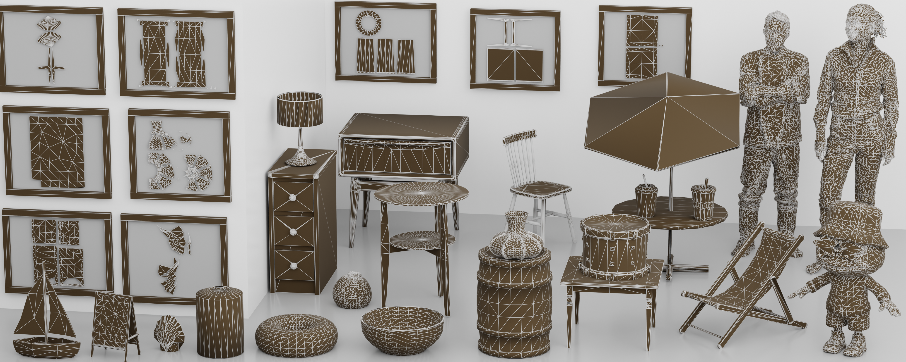
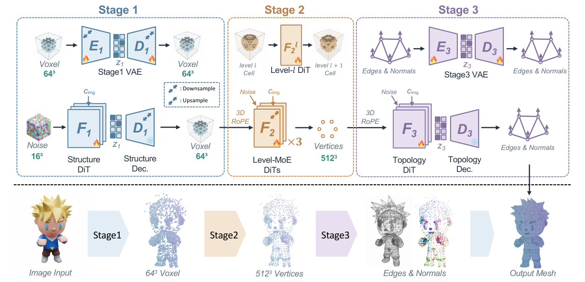
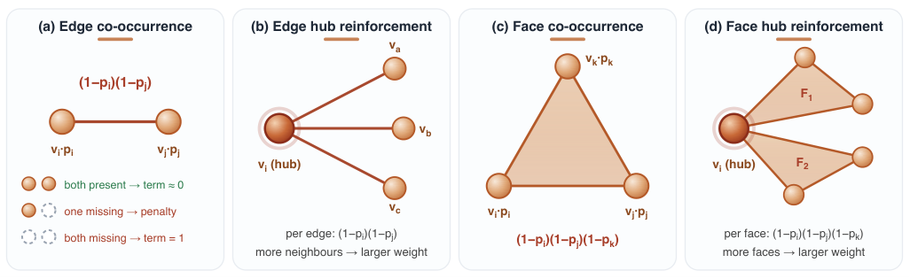
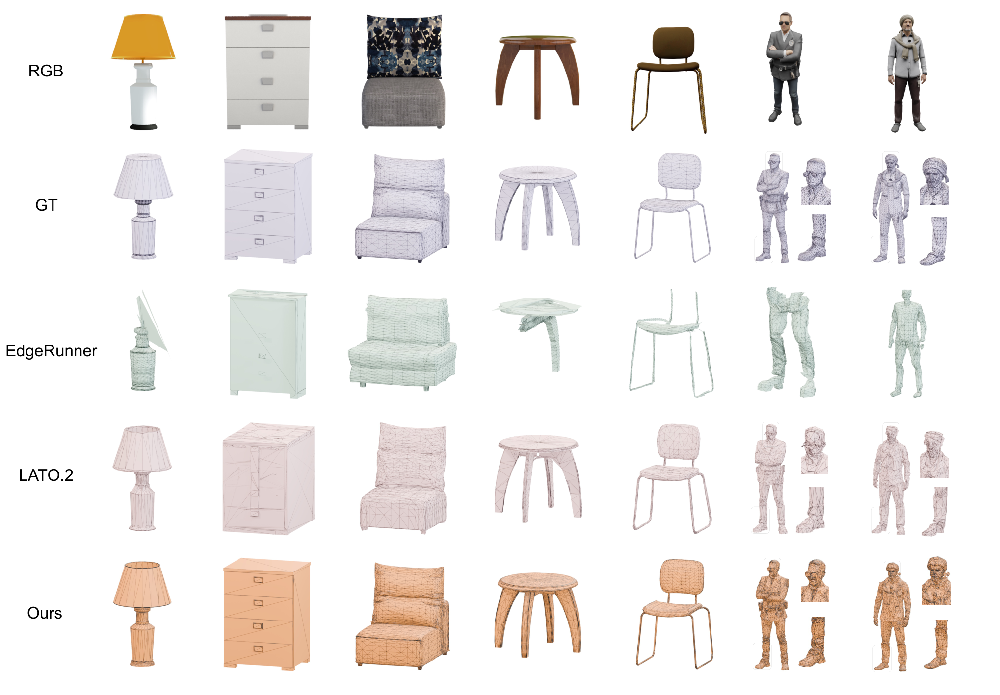
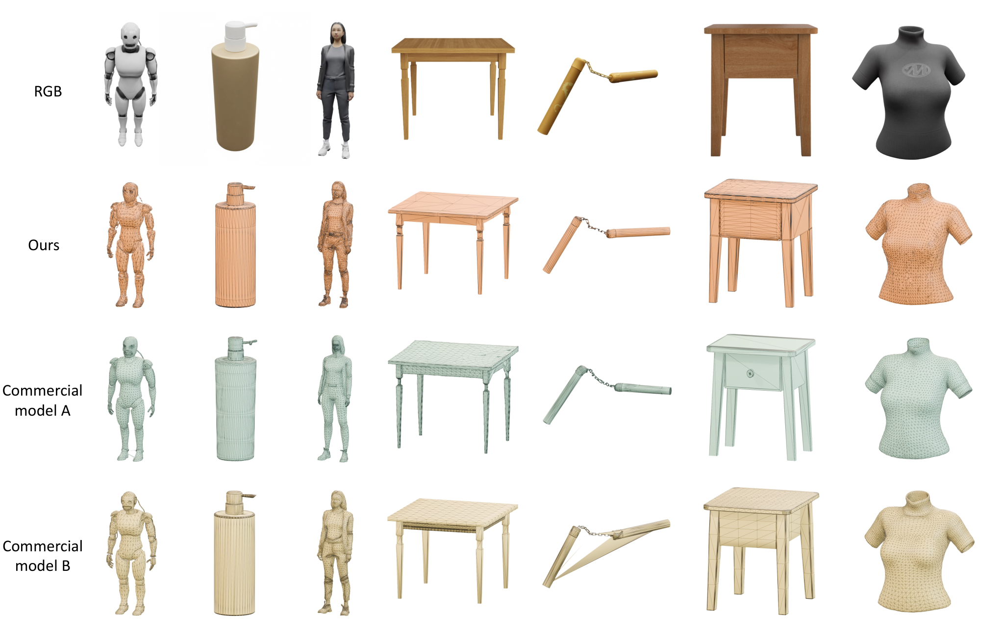
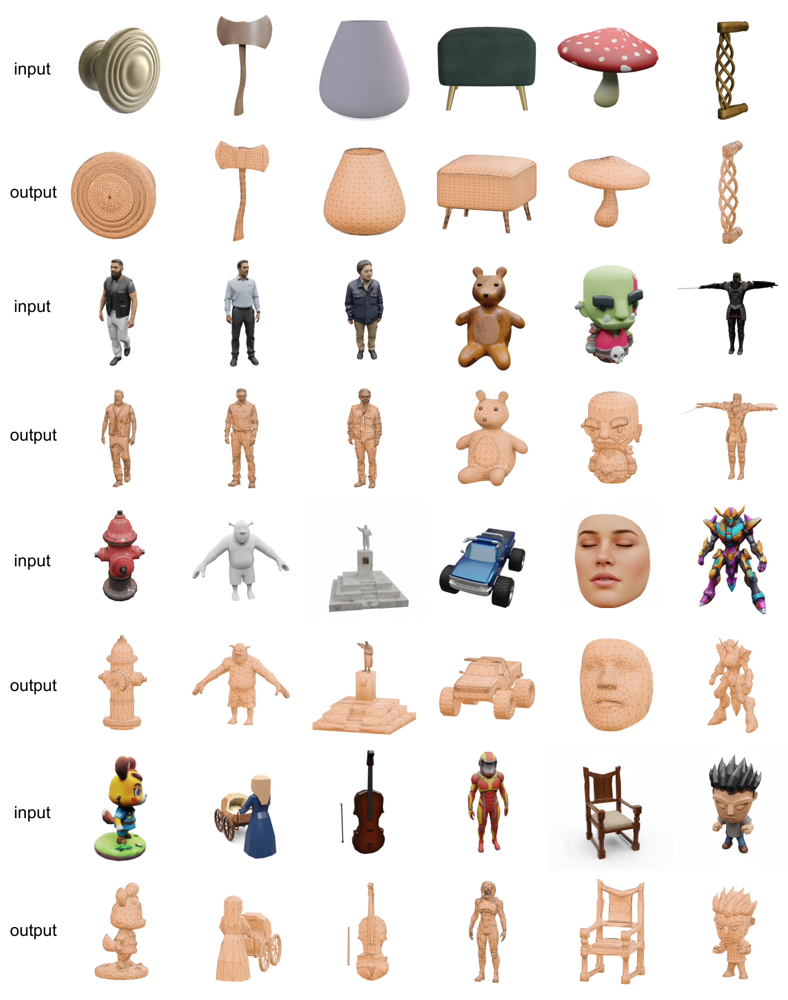
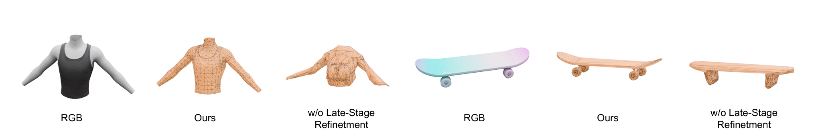

一句话概括:TaoFlowForge 是淘天 Meta 技术团队(Taobao3D Team)的图生原生网格基础模型:不走"隐式场 + Marching Cubes"的弯路,而是把网格生成分解为顶点生成(先 64³ 粗量化顶点、再三专家渐进细化到 512³)与连接关系预测(逐顶点 latent + 双线性亲和度打分出边、法向量定面朝向)两段,全部用 flow matching 实现,直接产出轻量、可编辑、拓扑干净、面朝向正确的三角网格——面向手淘"资产 <5MB、秒级加载、40fps 实时渲染"的生产约束。

TaoFlowForge/assets/teaser.png。电商 3D 化的硬性生产约束(论文 §1 与公众号技术解读):手淘/Vision Pro 淘宝/AR 试摆场景要求 3D 资产体积小、拓扑规则、可直接 UV 展开与绑定。SDF 系方法产出的网格"面数过高且拓扑不规则"(excessively high face counts and topologically irregular structures),导致 UV 展开瓶颈、端侧渲染存储开销大、绑定/动画困难。原生网格生成直接对 $(\mathcal{V},\mathcal{F})$ 建模,绕开这些痛点,但已有两条路线各有死穴:
把网格序列化成 1D token 流逐 token 生成(MeshAnything、EdgeRunner、BPT 等)。失败模式:序列降维丢失 3D 空间结构,模型只能"死记硬背";面数上升时"序列爆炸"带来高延迟与不稳定。论文定性指出 EdgeRunner"倾向输出平滑凸包、丢掉细薄或拓扑孤立的结构——四肢消失、头发塌成一整块、五官糊成一团"(§4.2)。
在原生 3D 空间扩散,保留空间信息,但顶点生成不稳定,且大多不显式预测面朝向:LATO.2 缺乏显式面朝向预测、法向不一致需后处理矫正;Nexus 用八叉树层级扩散生成顶点,误差逐层累积导致整体结构不稳(§1、§2)。
"3D 数据天然有限且分散,只有较小比例满足干净拓扑的质量要求"(§1)。干净拓扑数据是指连 ML 训练都"够格"的规则连接资产,需要从公开数据海里筛。
stage0.py(64³ 占据)、论文 Stage 2 = 代码 stage1.py(Level-MoE 细化到 512³)、论文 Stage 3 = 代码 stage2.py(拓扑)。输入:单张 RGB 图像(可选 RGBA);输出:带朝向的三角网格 $\hat{\mathcal{M}}=(\hat{\mathcal{V}},\hat{\mathcal{E}},\hat{\mathcal{F}})$ + 逐顶点法向。三个阶段全部以冻结 DINOv3 提取的图像特征 $c_{img}$ 为条件(§3 原文:"All three stages are conditioned on image features $c_{\mathrm{img}}$ extracted by DINOv3"):

| 符号 | 含义 | 维度 / 取值 |
|---|---|---|
| $\mathcal{V},\mathcal{E},\mathcal{F}$ | 顶点 / 边 / 面集合;$\hat{}$ 表示生成结果 | $V=|\hat{\mathcal{V}}|$,推理上限 20,000(代码 max_vertices) |
| $c_{img}$ | DINOv3-L/16 图像 patch token 特征(三阶段共用,分辨率各为 512/768/1024) | $(1,1024/2304/4096,1024)$(源码推得) |
| $\mathbf{O}_{64}$ | Stage 1 输出的粗占据体素 | $\{0,1\}^{1\times64\times64\times64}$ |
| $\mathbf{z}_1$ | Stage 1 占据 VAE 隐变量 | $\mathbb{R}^{8\times16\times16\times16}$($d_1=8$,§4.1) |
| $\mathbf{y}^{(g)}$ | Stage 2 父 cell $g$ 的 8 个子 cell 占据标签 | $\{0,1\}^8$ |
| $\rho_R$ | 分辨率 $R$ 的占据率(训练集上估计一次,随 $R$ 单调下降) | $\in(0,1)$ |
| $\widetilde{\mathbf{y}}^R$ | Bernoulli 白化后的细化目标 | 零均值单位方差 |
| $f_R$ | 分辨率 $R$ 的 Level-MoE 专家(28 层 transformer) | 输出 $\mathbb{R}^8$ logits |
| $w_c,\alpha$ | Stage 2 加权 BCE:空间权重(occupied=1、近邻 $w_{near}$、远 $w_{far}$)与正类权重 $\alpha>1$ | 数值原文未给 |
| $\mathbf{h}_i,\mathbf{f}_i$ | Stage 3 顶点输入特征 / 共享 edge MLP 输出 | $\mathbb{R}^d \to \mathbb{R}^{d_e}$ |
| $\mathbf{s}_i,\mathbf{d}_i$ | source / destination 嵌入($W_s,W_d$ 无偏置投影) | $\mathbb{R}^{d_e}$ |
| $a_{ij}$ | 对称化边 logit,$\hat{\mathcal{E}}$ 由 $\sigma(a_{ij})$ 阈值化 | $V\times V$ 矩阵 |
| $\hat{\mathbf{n}}_i$ | 预测的逐顶点单位法向(决定面绕序) | $\mathbb{R}^3$ |
| $\mathbf{z}_3$ | Stage 3 逐顶点 latent(数量恒等于 $V$,不重编码坐标) | 代码:latent_dim=32(stage2.py:21) |
| $v_\theta,v_\psi$ | Stage 1 / Stage 3 的速度场(flow DiT) | — |
stage0.py)低分辨率下先把"大形"稳住。论文明确说 Stage 1 与 TRELLIS.2 的第一阶段同构,直接从其预训练 checkpoint 初始化再微调("initialize it from the corresponding pretrained checkpoint and fine-tune it directly",§3.1)——用成熟开源模型的图像→结构先验兜底全局正确性,把学习压力转移给后续细化阶段。
| 组件 | 输入 → 输出 | 关键配置 | 出处 |
|---|---|---|---|
| DINOv3-L/16 条件器 | 图像 512×512 → $(1,1024,1024)$ patch token | 冻结;丢 CLS + 4 register token;bf16 | dino.py:21-47,89-90;stage0.py:35 |
| 占据 VAE(3D 卷积) | $\{0,1\}^{64^3}$ ↔ latent $(8,16^3)$ | 解码器通道 (512,128,32),两次 pixel_shuffle_3d 上采样 16→32→64;fp16 权重 | 论文 §4.1;ss_vae.py:143,150,179-194 |
| Latent flow DiT | $(1,8,16,16,16)$ 噪声 → 速度场 | 30 层、宽 1536、12 头、MLP ratio 5.3334;3D RoPE;share_mod adaLN;QK-RMSNorm;≈1.3B 参数 | 论文 §4.1;ss_flow.py:390-397 |
| 采样器 | 积分 50 步 → latent | Euler velocity ODE;CFG=7.5(负条件=全零 token);t_shift=2.718(≈e);start_time=0.013 | flow.py:86-103;config.py:18-20 |
| 后处理 | logits → 顶点坐标 $(N_0,3)$ | 阈值 0.5 + "mid" 1D 游程滤波(keep=2)+ 确定性 FPS 截断到 ≤15,000 cell | stage0.py:137-229;config.py:21-24 |
占据 VAE 的编码器产出对角高斯近似后验:
flow DiT 以 $\mathbf{z}_1^0\sim\mathcal{N}(0,I)$、$t\in(0,1)$、线性插值 $\mathbf{z}_1^t=(1-t)\mathbf{z}_1^0+t\mathbf{z}_1$ 训练条件速度场:
image.py:84-98)。flow.py:86-96)。VAE 重建项 + KL(论文未单列展开);DiT 端为式 2 的速度匹配损失。本阶段图像条件只通过 cross-attention 注入,时间步通过 adaLN 注入(源码:ss_flow.py:285-292,314-325)。
stage1.py)这是全文最核心的设计决策:不做一步到位的连续顶点生成,而是在原始占据空间里做三次 2× 上采样($64^3\to128^3\to256^3\to512^3$),每级由一个参数独立的 28 层 transformer 专家负责(§4.1)。为什么不用一个统一模型?论文的机制解释:随分辨率升高,占据率 $\rho_R$ 单调下降,各级占据分布"逐渐稀疏且统计特性不同"(progressively sparser and statistically distinct),单一模型要在差异巨大的条件分布间折中;分专家 = 解耦"整体骨架"与"微观细节"的控制,缓解八叉树"一步错步步错"的误差累积(§3.2 Level-MoE)。
二值目标 $\mathbf{y}^R$ 的统计随分辨率剧烈变化,与高斯 FM 源尺度差异大。定义占据率 $\rho_R=\mathbb{E}[y^{(g)}]$(训练集估计一次),做白化:
使目标零均值单位方差、与标准高斯源前两阶矩匹配。FM 路径与专家前向:
推理时把预测白化回归一化空间,用端点诱导速度积分($t<1$ 防端点奇异),再映回占据空间阈值化:
主项是带空间加权的 BCE($\alpha>1$ 提升稀有占据 cell 召回;$w_c$:占据=1、半径 $r$ 内近邻=$w_{near}$、远空 cell=$w_{far}$,$w_{near}>w_{far}$):
边先验(soft-OR 共占据):仅当真实边的两端点被联合预测为空时惩罚;按顶点聚合后,度数高的顶点自动获得更大权重——结构上重要的连接点被重点保护:
面先验:三元版 soft-OR,$\mathcal{L}_{\mathrm{face}}=\frac{1}{|\mathcal{F}|}\sum_{(i,j,k)\in\mathcal{F}}(1-p_i)(1-p_j)(1-p_k)$(原文未编号)。Stage 2 总目标:

| 组件 | 配置 | 出处 |
|---|---|---|
| 专家数 / 分工 | 3 个 RawOctreeDenoiser,负责 level 6/7/8(即 64³→128³→256³→512³);硬路由(按 level 精确匹配,非学习门控) | stage1.py:20,52-59 |
| 每个专家 | 28 层、宽 1536、12 头、MLP 5.3334;输入 Linear(8,1536)(8 维八叉子占据为 token);输出 Linear(1536,8) | octree_dit.py:243-282 |
| 条件注入 | 时间 + 层深 embedding 拼接进共享 adaLN(cond_fusion_mode="concat");图像 cross-attn;归一化坐标 3D RoPE | octree_dit.py:38-39,269,327-329 |
| 采样 | 30 步、CFG=7.0、t_shift=1.0;对 x1 预测的 rectified-flow 欧拉步(coefficient=(t_next−t)/max(1−t,1e−3)) | config.py:33-37;stage1.py:239-244 |
| 训练侧线索 | checkpoint 元数据:prediction_target="occupancy", supervision_mode="x1_logit_bce" | stage1.py:351-356 |
| 顶点落地 | cell 中心 $(coord+0.5)/2^{level}\times2-1$;FPS 截 ≤20,000;归一化后 snap 回 512 格点 | octree_dit.py:14-17;stage1.py:270-308 |
显存分页细节:三个专家推理时逐个上 GPU、其余放回 CPU(stage1.py:61-96)——"Level-MoE"在工程上是分页机制而非并行 MoE。
stage2.py)顶点位置 $\hat{\mathcal{V}}$ 在 Stage 2 已确定,Stage 3 的核心是"保持 V 不变的一步式拓扑推理":拓扑 VAE 不做空间压缩,给每个顶点挂 exactly 一个 latent code(latent 数恒等于顶点数),每个 latent 同时编码"该顶点如何与他人连接"与"该点处表面法向";顶点坐标不再重编码,而是通过 3D voxel RoPE 注入 DiT("each token is assigned the coordinate of its corresponding vertex",§3.3)。
共享 edge MLP $g_e$ 把顶点特征 $\mathbf{h}_i\in\mathbb{R}^d$ 映到 $\mathbf{f}_i$,两个独立无偏置投影:
边无向,对称化后得到 $V\times V$ logit 矩阵(批量矩阵乘法一次并行产出全部顶点对):
面 = 边图中的闭合三环:
面朝向由预测的逐顶点法向直接决定(对比 LATO.2 的事后矫正):
拓扑 VAE 目标(连接项为合法上三角 logit 上的类别均衡 BCE,法向为 cosine 损失,KL 约束逐顶点后验):
逐顶点 latent 的 flow DiT(position-aware,坐标经 voxel RoPE 注入每个 block):
| 组件 | 配置 | 出处 |
|---|---|---|
| 逐顶点 latent | 维度 32;数据集统计归一化(std clamp 下限 0.1) | stage2.py:21-22,46-48 |
| Latent flow DiT(RefineDiT) | 28 层、宽 1536、24 头;adaLN-Zero;voxel RoPE;输入 1024² 图像 → 4096 条件 token | dit.py:263-285;stage2.py:26 |
| 拓扑解码器 | latent 32 → 投影到 hidden 1024 → 6 层 pre-norm self-attn(8 头);边特征取 hidden[512:768],MLP 256→1024→512 后 src/dst 双投影,bmm + bias 再对称化,对角置 −1e9 | topology_decoder.py:59-114 |
| 法向头 | 1024→256→3 MLP + L2 归一化 | topology_decoder.py:84-88,115 |
| 取面 | $\sigma(logits)>0.5$ 得布尔边矩阵 → 枚举共同邻居组三角形;上限 100,000 面,边过密时按度数 topk 稀疏化;过滤面积 <1e−10 退化面 | topology_decoder.py:129-189;stage2.py:198-205 |
| 采样 | 50 步 Euler、CFG=3.0、t_shift=1.0 | config.py:46-48 |
RefineDiT 的默认深度为 depth=28(dit.py:272),且 checkpoint 加载是严格校验(model keys/shape/architecture metadata 必须匹配,README.md:59)。即论文所述的 32 层与发布权重实际结构(28 层)不一致——要么论文写的是内部更新版、要么笔误,按发布代码为准并标记 ⚠️【待核实】论文 32 层 vs 代码 28 层。| 阶段 | 损失 | 公式 | 权重 / 超参(真值) | 作用 |
|---|---|---|---|---|
| Stage 1 | $\mathcal{L}_{\mathrm{S1\_DiT}}$ | 式 2,速度场 MSE | 无显式权重 | 64³ 粗占据 latent 的 flow matching |
| Stage 2 | $\mathcal{L}_{\mathrm{bce}}$ | 式 6,空间加权 BCE | $\alpha>1$,$w_{near}>w_{far}$,半径 $r$ —— 数值原文与代码均不可得(训练代码未发布) | 处理占据/空白类别不均衡,近邻带重点防伪阴性 |
| Stage 2 | $\mathcal{L}_{\mathrm{edge}}$ | 式 7/8,soft-OR 共占据 | $\lambda_e$,按分辨率设置,数值未给 | 保护 GT 边端点,强化高度数顶点 |
| Stage 2 | $\mathcal{L}_{\mathrm{face}}$ | 未编号,三元 soft-OR | $\lambda_f$,数值未给 | 保护 GT 面的三个顶点 |
| Stage 3 | $\mathcal{L}_{\mathrm{edge}}$(VAE) | 合法上三角 logit 的类别均衡 BCE | 式 14 主项 | 逐顶点对连接关系监督 |
| Stage 3 | $\mathcal{L}_{\mathrm{normal}}$ | 顶点法向 cosine 损失 | $\lambda_n$,数值未给 | 法向头监督 → 决定面朝向 |
| Stage 3 | $\mathcal{L}_{\mathrm{KL}}$ | 逐顶点后验高斯正则 | $\lambda_r$,数值未给 | VAE 正则 |
| Stage 3 | $\mathcal{L}_{\mathrm{S3\_DiT}}$ | 式 15,速度场 MSE | 无显式权重 | 逐顶点拓扑 latent 的 flow matching |
⚠️ 所有损失权重($\lambda_e,\lambda_f,\lambda_n,\lambda_r$)与 BCE 内部超参($\alpha,w_{near},w_{far},r$)论文未给数值、训练代码未发布,无法验证,此处不做任何"合理估计"(按库规范禁止编造)。训练侧仅能从 checkpoint 元数据窥见 Stage 2 用 x1_logit_bce 监督模式(stage1.py:351-356)。
训练超参(学习率 / batch / 步数 / EMA)论文未给、训练代码未发布。仅知:Stage 1 从 TRELLIS.2 一阶段 checkpoint 初始化(§3.1);Stage 2 各分辨率损失权重"per resolution"设置(§3.2);Stage 0 的 checkpoint 内含 EMA 权重副本(stage0.py:299,314-329),说明训练用了 EMA。
pipeline.py:369-528)工程细节:默认 --offload auto,逐 stage 把不活动模型移回 CPU 降峰值显存(pipeline.py:222-238);每个 stage 边界落盘 NPZ(含 NumPy/CPU/CUDA RNG 状态),支持 --resume-from 断点续跑;全程固定 seed=42 可复现。
本章数字全部来自 github.com/alibaba/Taobao3D 的 TaoFlowForge/ 目录(2026-10-28 拉取 main 分支 zip,README 最后更新 2026-10-21)。发布内容 = 推理管线 + CLI + Gradio demo + Python API;训练代码、数据清洗 pipeline、测试集均未随仓库发布(论文 Abstract 承诺 "release all the code and weights together with a portion of our test dataset",当前兑现的是推理代码 + ModelScope 权重,测试集论文 §4.1 称 "will release later")。
| 参数 | 值 | 出处 |
|---|---|---|
| Stage 0 采样步数 / CFG / t_shift / 阈值 / max_cells | 50 / 7.5 / 2.718 / 0.5 / 15,000 | config.py:18-24 |
| Stage 1 步数 / CFG / vc_cfg / t_shift / max_vertices | 30 / 7.0 / 1.0(未接线,见 9.4) / 1.0 / 20,000 | config.py:33-38 |
| Stage 2 步数 / CFG / t_shift / 边阈值 | 50 / 3.0 / 1.0 / 0.5 | config.py:46-49 |
| 图像尺寸 / seed / 补洞开关 | 1024 / 42 / 默认开 | config.py:60-66 |
| DINOv3 变体 | DINOv3-L/16(24 层、1024 宽、16 头、4 register),三阶段输入分辨率 512/768/1024 → 1024/2304/4096 条件 token | dino.py:21-47,89-90;stage0.py:35;stage1.py:31;stage2.py:26 |
| 推理精度 | 各阶段 autocast bf16;attention 固定 bf16;VAE decoder fp16;RMBG 与图像处理 fp32 | stage0.py:56-60;attention.py:49;ss_vae.py:188-194 |
| 依赖 | torch 2.5.1 / transformers 4.57.3 / trimesh 4.4.7 / open3d 0.19.0 / embreex 4.4.0;flash-attn 不在 requirements(可选导入,优先级 fa3>fa2>sdpa) | requirements.txt:1-14;attention.py:15-49 |
stage0.pt / stage1.pt / stage2.pt),托管于 ModelScope;加载为严格校验(键、形状、架构元数据)。⚠️ README.md:48 写 "Prepare the five released checkpoint files",但目录树只有 3 个——README 内部矛盾,实际只需 3 个。pipeline.py:222-238)+ Stage 1 三专家逐个分页(stage1.py:61-96)。⚠️【待核实】实际峰值显存,需在目标卡上实测。metadata.json(pipeline.py:438-518),无官方基准数字。tools/mesh_hole_fill.py:1783,调用参数 fill_quad_rings=True, ring_max_n=4(postprocess.py:85-90)。tools/mesh_hole_fill.py:879,1554。tools/normal_correct.py:254,283,457,515);面数 >100,000 直接跳过,可见正面比例下降 >0.02 则整体回退(postprocess.py:21-22,33-45)。mesh.obj 与归一化到 $[-0.5,0.5]^3$ 的 mesh.glb(postprocess.py:146-175)。--no-fill-holes 可保留 Stage 2 直出的原始拓扑(mesh_raw.obj)。论文未说明评测指标(Table 1)用的是 raw 还是修复后网格 ⚠️【待核实】。| # | 差异 | 证据 |
|---|---|---|
| 1 | 论文称 Stage 3 DiT 32 层,发布代码 28 层 | 论文 §4.1 vs dit.py:272 |
| 2 | README badge 写 arXiv:2507.16290,链接与正文均为 2609.37139 | README.md:6 vs README.md:24,211 |
| 3 | README 写 "five checkpoint files",实际 3 个 | README.md:48 vs README.md:52-57 |
| 4 | vc_cfg_scale(顶点数条件 guidance)在 config 声明但全仓无使用点,checkpoint 强制 use_vert_count_cond=False → 死配置;论文亦未提顶点数条件 | config.py:36;stage1.py:333 |
| 5 | target_num_vertices=3000 同为死配置(无任何代码读取),实际上限是 Stage 1 的 20,000 | config.py:61,71-72;stage1.py:290 |
| 6 | 配置名 local_max_neighbors 实现实为"1D 游程边界保护 + 中线保留"的 mid 滤波,非 3D local-max | config.py:22 vs stage0.py:137-187 |
| 7 | 论文 Abstract 承诺 "release all the code",实际仅推理代码;训练代码、数据 pipeline、TE-388 测试集未发布(§4.1 "will release later") | 仓库结构;论文 Abstract/§4.1 |
| 8 | 代码血统:ss_flow 文件头自称 "Inference-only TRELLIS.2 sparse-structure flow transformer",artifacts 保留 legacy 前缀 __swifttopo_(项目前身疑名 SwiftTopo) | ss_flow.py:1;artifacts.py:14 |
| 9 | 背景移除(RMBG-2.0)是可选组件;不提供模型目录时仅警告、保留原背景。RMBG-2.0 本身是 CC BY-NC 4.0(商用需单独授权) | image.py:14-18;README.md:91 |
| 数据集 | 方法 | CD ↓ | HD ↓ | ULIP-I ↑ | Uni3D-I ↑ | FD-Incep. ↓ | FD-DINOv2 ↓ |
|---|---|---|---|---|---|---|---|
| Toys4K | LATO.2 | 0.1553 | 0.3663 | 0.1674 | 0.3330 | 78.9649 | 616.4222 |
| Toys4K | EdgeRunner | 0.3264 | 0.6145 | 0.1514 | 0.2347 | 30.9466 | 339.7754 |
| Toys4K | TaoFlowForge | 0.0655 | 0.2451 | 0.1923 | 0.3509 | 18.1812 | 197.7314 |
| TE-388 | LATO.2 | 0.0991 | 0.2990 | 0.1509 | 0.2978 | 119.9100 | 931.6500 |
| TE-388 | EdgeRunner | 0.3990 | 0.7102 | 0.1261 | 0.1878 | 67.0844 | 651.5899 |
| TE-388 | TaoFlowForge | 0.0415 | 0.2075 | 0.1829 | 0.3106 | 43.2544 | 363.7326 |
| 对比 | CD 降幅 | HD 降幅 | FD-DINOv2 降幅 |
|---|---|---|---|
| Toys4K:Ours vs LATO.2 | (0.1553−0.0655)/0.1553 = 57.8% | 33.1% | 67.9% |
| Toys4K:Ours vs EdgeRunner | 79.9% | 60.1% | 41.8% |
| TE-388:Ours vs LATO.2 | 58.1% | 30.6% | 61.0% |
| TE-388:Ours vs EdgeRunner | 89.6% | 70.8% | 44.2% |
论文正文未给这些百分比,以上为本笔记按 Table 1 原始值计算。



| Stage 2 变体 | CD ↓ | HD ↓ | ULIP-I ↑ | Uni3D-I ↑ | FD-Incep. ↓ | FD-DINOv2 ↓ |
|---|---|---|---|---|---|---|
| w/o Geometry-aware Losses(仅加权 BCE) | 0.0771 | 0.2734 | 0.1515 | 0.2501 | 52.6284 | 423.8286 |
| w/o Normalised Target(不归一化 + 有几何损失) | 0.0576 | 0.2529 | 0.1647 | 0.2897 | 47.2389 | 390.2450 |
| Ours(归一化 + 全部几何项) | 0.0415 | 0.2075 | 0.1829 | 0.3106 | 43.2544 | 363.7326 |
读表结论(Δ 按原值手算):去掉几何感知损失,CD 恶化 +86%(0.0415→0.0771),是所有消融里伤得最深的组件;去掉归一化,CD 恶化 +39%。两者叠加贡献了 Stage 2 的几乎全部增益——"把二值占据目标白化到高斯源的矩"与"把网格连接性写进损失"是互补的两半:前者解决优化地形,后者解决目标定义。

| 方法 | 年份 | 输入假设 | 场景/形状表示 | 监督信号 | 训练数据 | 训练时长 | 推理耗时 | 显存 | 关键指标 | 开源 |
|---|---|---|---|---|---|---|---|---|---|---|
| TaoFlowForge | 2026 | 单图(DINOv3 特征) | 原生 (V,E,F),512³ 量化顶点 ≤20K | flow matching + 拓扑感知 BCE/边/面损失 | ≈80 万清洗网格(自建+手工+Objaverse+TexVerse) | 未公布 | 未公布 | 未公布(stage 级 offload) | Toys4K CD 0.0655 | ✅ 推理代码+权重(Apache-2.0) |
| LATO.2 | 2026 | 单图 | 原生网格(扩散式拓扑 latent) | 扩散 + 连接头 | 未公布 | — | — | — | Toys4K CD 0.1553 | ✅(TFF 论文 baseline) |
| EdgeRunner | 2024 | 点云条件 | 自回归 token 序列(半边结构压缩) | 下一个 token 分类 | Objaverse 系 | — | 随面数线性增长(序列解码) | — | Toys4K CD 0.3264 | ✅ |
| Nexus | 2025【推测】年份按引用序 | 单图 | 八叉树层级扩散顶点 + 逐顶点拓扑 latent | 扩散 | — | — | — | — | —(论文未给对比数) | ❌ 未见 |
| MeshAnything 系 | 2024 | 点云 | 自回归面序列 | 下一个 token | Objaverse | — | 序列长度瓶颈(≤数千面) | — | — | ✅ |
| BPT | 2024 | 点云/图像 | 块状补丁 token 化 + AR | 下一个 token | Objaverse 系 | — | 较 MeshAnything 降(序列压缩) | — | — | ✅ |
| TRELLIS.2(场方法对照) | 2026 | 单图 | 稀疏体素结构 + 隐式场 → 提网格 | flow matching | 大规模多源 | — | — | — | 几何质量强但拓扑无结构(需后提取) | ✅ |
⚠️ 除论文 Table 1 出现的数字外,其余方法的耗时/显存/数据规模多未见公开一致口径,按库规范留 "—" 不编造。Nexus 年份据 TFF 参考文献排序推断,已标注。
| 范式 | 代表方法 | 核心先验 | 局限 |
|---|---|---|---|
| 场表示 + 表面提取 | SDF 系、TRELLIS/TRELLIS.2、Hunyuan3D | 连续隐式场表达能力强 | 提取网格密集、拓扑无结构、UV/绑定困难 |
| 自回归原生网格 | MeshAnything、EdgeRunner、BPT、DeepMesh | 复用 LLM 序列建模 | 序列爆炸、空间信息丢失、推理随面数变慢 |
| 扩散原生网格(整体式) | LATO/LATO.2、Nexus | 3D 空间内扩散保结构 | 顶点不稳、无面朝向、八叉树误差累积 |
| 级联 flow + 顶点/拓扑解耦 | TaoFlowForge | 顶点=分分辨率占据预测;拓扑=逐顶点并行打分 | 512³ 量化上限;仅三角面;训练代码未开 |
ss_flow.py:1);差异在于 TRELLIS 系走"场→提网格",TFF 把后两级换成原生顶点/拓扑生成。论文与官方解读(公众号,2026-09-30)明确手淘生产约束:资产 <5MB、秒级加载、>40fps 端侧渲染,且要"准确还原材质类型与纹理细节"。TFF 负责几何半边(轻量拓扑干净网格,≤20K 顶点 ≈ 数十 KB 级顶点数据),材质半边由 TaoTex 负责。对我们(3D 重建/数字人方向)的直接价值:
| 项 | 情况 |
|---|---|
| 依赖 | Python 3.10 + torch 2.5.1 + CUDA 12.1;DINOv3-L(自带或外挂);可选 RMBG-2.0(注意其 CC BY-NC 许可) |
| 权重获取 | 仅 ModelScope(3 个 .pt);国内网络友好 |
| 显存 | 未公布;有 stage 级 offload + 专家分页,⚠️【待核实】消费级卡(如 3090 24G)能否开 offload 跑通需实测 |
| 耗时 | 未公布;三阶段合计 50+30×3+50 = 约 190 次网络前向(CFG 双倍)+ DINO 三次编码 + 补洞,⚠️【推测】分钟级以内,需实测 |
| 可复现性 | 固定 seed + 确定性 FPS + 严格 checkpoint 校验,工程可复现性好 |
| 商用 | 代码 Apache-2.0;权重许可未单独声明(随仓库 Apache-2.0),RMBG 组件单独受限 |
问题:全文以"拓扑干净"为核心卖点,但 Table 1 全是几何/感知指标(CD/HD/ULIP/FD),没有一个拓扑指标(non-manifold 率、watertight 率、边界边数量、度数分布)。且评测网格是否经过 §9.3 的补洞/法向后处理未说明(mesh_raw.obj vs mesh.obj)。佐证:论文 §4.1 指标定义;代码 pipeline.py:490-528 的后处理链。建议:补一组拓扑统计表(raw / repaired 两列);评测脚本随测试集发布。
问题:面只能从"三边互连"恢复(式 12),意味着:四边形主导的艺术网格会被强行三角化(论文宣称"可编辑"恰依赖四边主导拓扑);线框/薄片(纸张、树叶单面)等非封闭结构无法表示。佐证:式 12;代码 topology_decoder.py:168-189 枚举共同邻居组三角形。建议:扩展为"边 + 面"两级预测(边图之上再预测面片成员),或对开放边界引入虚拟闭合 token。
问题:FPS 截断到 20,000 顶点(stage1.py:290),且顶点坐标被 snap 到 512 格点(stage1.py:270-282)——亚体素锐边被量化圆角化,复杂机械件/带浮雕的物体细节上限明确。建议:参考 2DGS/GOF 的"粗网格 + 局部位移场"做法,在网格面上回归连续 offset;或对高曲率区域做自适应细分预算分配。
问题:只消融了 Stage 2 的归一化与几何损失;src/dst 双投影(式 10-11)、法向头、Level-MoE 专家数、TRELLIS.2 初始化这四个"论文叙事里最重"的设计全部没有量化消融。建议:至少补 src/dst vs 单投影对称内积的对照——这是论文专门论述过动机的机制。
问题:训练代码、80 万数据集的构成比例、清洗 pipeline、损失权重($\lambda_e,\lambda_f,\lambda_n,\lambda_r$ 及 $\alpha,w_{near},w_{far},r$)均未发布;"release all the code"未完全兑现。建议:至少发布训练配置 yaml 与数据统计;VLM 清洗 agent 的 prompt 与阈值。
问题:三个专家参数完全独立、按 level 硬路由(stage1.py:52-59),低层专家学到的几何特征无法被高层复用;推理时专家分页上下 GPU 也增加调度开销。建议:探索共享 trunk + 轻量 level head,或软路由混合,观察参数效率与跨层一致性。
问题:背面几何完全由生成先验脑补,商品场景(要求与实物一致)天然风险。兄弟模型 TaoTex 已支持多视图,TFF 目前是纯单图。建议:多视图条件(共享 DINO 特征 + 视角 embedding)是自然延伸。
| 优先级 | 改进点 | 一句话 |
|---|---|---|
| 高 | ① 拓扑量化评估 | 卖点没有硬指标支撑 |
| 高 | ② 闭合三环的表示边界 | 非流形/开放结构/四边网格全部出局 |
| 中 | ③ 20K 顶点与 512³ 量化上限 | 细节天花板明确 |
| 中 | ④ 消融不完整 | 核心机制未归因 |
| 中 | ⑤ 训练黑盒 | "release all the code" 未兑现 |
| 低 | ⑥ MoE 硬路由 | 参数效率可优化 |
| 低 | ⑦ 单图先验瓶颈 | 多视图是必由之路 |
总结:TaoFlowForge 把"原生网格生成"重新组织成一条工程化程度很高的级联流水线——TRELLIS.2 先验稳全局(Stage 1)、Bernoulli 白化 + Level-MoE 做抗误差累积的渐进细化(Stage 2)、逐顶点 latent + 双线性打分 + 法向头做一步式拓扑推理(Stage 3),辅以 80 万级清洗数据和补洞/法向校正后处理。在 Toys4K/TE-388 上对开源 AR 与扩散 baseline 的 CD 优势达 58-90%,且推理代码与权重真实可用。
演进定位:它不代表全新范式,而是把两条路线的优点缝合——用场方法(TRELLIS.2)的结构先验解决扩散原生网格"全局不稳"的问题,用并行拓扑打分解决 AR"序列爆炸"的问题。真正的范式信号在 Stage 2/3 的两个机制:把生成目标白化到与噪声源同矩(可归因的 39% CD 改善)、把"边"建模为逐顶点对的并行亲和度而非序列/隐式解码。后续的合理演进:多视图条件、四边形/混合面片支持、训练侧开放。
--no-fill-holes 的 raw 输出才是模型的真实拓扑能力。